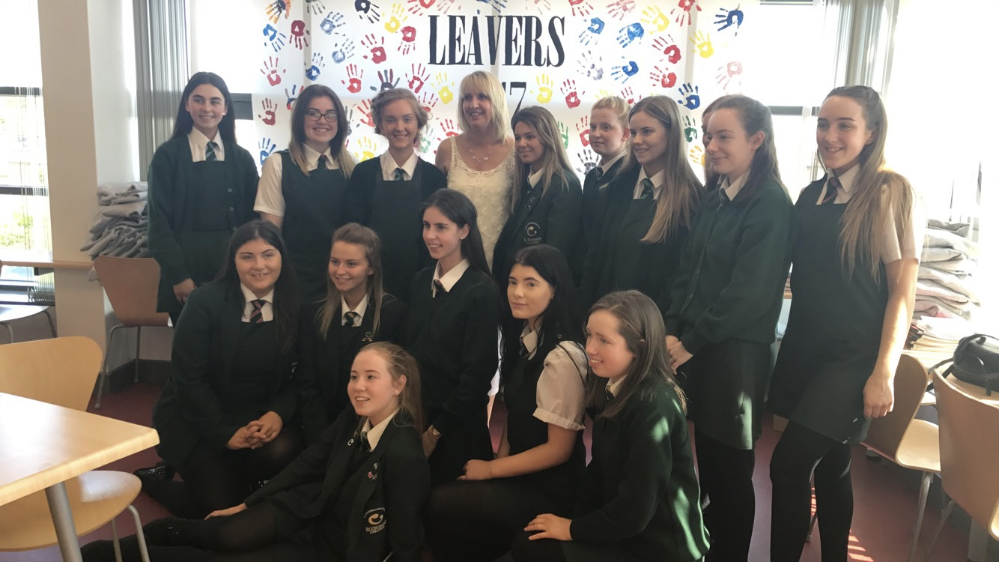
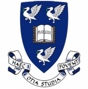
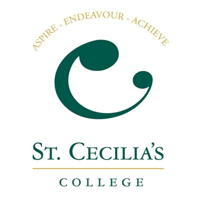

I have been studying at the University of Liverpool since September 2017. I took a year out between my second and third year to complete a placement in app development, so I am planning to graduate in July 2021. Below is a list of some of the modules I have completed:
- Object Oriented Programming - Java
- Software Engineering 1 - Software practices and basics
- App Development - IOS using Swift
- Principles of C and memory Management

I studied both my A-levels and GCSEs at St. Cecilia's College. I gained grades A* - C at GCSE including maths and english. My A-level results are below:
- Mathematics - B
- Software Systems Development - B
- Art and Design - C